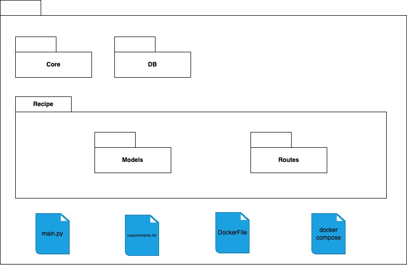

Documentação da Arquitetura
Histórico de versões
| Versão | Alteração | Responsável | Data Alteração |
|---|---|---|---|
| 1.0 | Criação do documento, descrição da visão geral, metas e restrições e criação de diagrama de tecnologias | Felipe Candido de Moura | 28/04/2025 |
| 1.1 | Criação da Arquitetura do Banco de Dados | Diógenes Dantas Lélis Júnior | 29/04/2025 |
| 1.2 | Criação diagrama de sequência e classes | Bruno Seiji Kishibe | 29/04/2025 |
| 1.3 | Criação diagrama de pacotes do UserService e RecipeService | Diógenes Dantas Lélis Júnior | 19/05/2025 |
| 1.4 | Edição da Arquitetura do Banco de Dados | Diógenes Dantas Lélis Júnior | 14/07/2025 |
| 1.5 | Atualiza diagrama de classes | Bruno Seiji Kishibe | 14/07/2025 |
Visão geral
Este documento visa registrar a aquitetura proposta para o projeto SideChef.
O software consiste em uma aplicação mobile arquitetada em microsserviços, com o frontend desenvolvido em React Native cuja comunicação de backend é feita utilizando a framework FastAPI. O microsserviço referente aos usuários contará com um banco de dados PostgreSQL, enquanto o referente às receitas com um MongoDB.
Metas e restrições da arquitetura
| Restrição | Ferramenta |
|---|---|
| Linguagem | Python e TypeScript |
| Framework | React Native e FastAPI |
| Plataforma | Mobile |
| Segurança | Cada usuário contará com uma conta autenticada via token, visto que o aplicativo dará suporte para criação de receitas personalizadas. |
| Idioma | Português |
Representação da Arquitetura
1. Diagrama de Tecnologias
Autor: Felipe Moura
O diagrama de tecnologias demonstra as tecnologias utilizadas no projeto, e como interagem entre si. Pode se ver também a arquitetura de microsserviços explicitada no diagrama e como esta junto a seus componentes se encaixam no sistema.
Serviços
Podem ser considerados como serviços os diversos subcomponentes do sistema que fornecem algum tipo de interação, ou para com o cliente diretamente, ou para o próprio sistema interno.
UserService
O microserviço UserService é responsável pela gerência e armazenamento das contas de usuário do sistema.
RecipeService
O microsserviço RecipeService é responável pela gerência e armazenamento das receitas registrado no sistema, tanto as pré-armazenadas pela equipe de desenvolvimento, quanto as criadas pelos próprios usuários.
FrontEnd
O frontend consiste na parte visual e utilitária ao qual o usuário interage, no caso será o aplicativo mobile desenvolvido em React Native.
2. Diagrama de sequência
Autor: Bruno Kishibe
3. Diagrama de Classes
Autor: Bruno Kishibe
4. Arquitetura de banco de dados
4.1 Diagrama Entidade Relacionamento
4.1.1 Microsserviço do Usuário (UserService)
Versao 1
Autor: Diógenes Júnior
Versao 2
Autor: Diógenes Júnior
4.1.2 Microsserviço das Receitas (RecipeService)
{
"id": "id-da-receita",
"nome": "nome",
"ingredientes": ["ingrediente_1", "ingrediente_2"],
"instrucoes": "Instruções",
"usuarios_que_salvaram": [
"id-do-usuario-1",
"id-do-usuario-2"
]
}
Autor: Diógenes Júnior
4.2 Modelo Lógico de Dados
4.2.1 Microsserviço do Usuário (UserService)
Versao 1
Autor: Diógenes Júnior
Versao 2

Autor: Diógenes Júnior
4.2.2 Microsserviço das Receitas (RecipeService)
{
"id": "<ObjectId>",
"nome": "string",
"ingredientes": ["string"],
"instrucoes": "string",
"usuarios_que_salvaram": ["string"]
}
Autor: Diógenes Júnior
5. Diagrama de Pacotes
5.1 UserService
Autor: Diógenes Júnior
5.2 RecipeService

Autor: Diógenes Júnior
Referências Bibliográficas
[1] EQUIPE ARANDU 2024-2. Documento de Arquitetura. Disponível em: https://fga-eps-mds.github.io/2024.2-ARANDU-DOC/projeto/arquitetura/
[2] EQUIPE SYSARQ 2021-1. Documento de Arquitetura. Disponível em: https://fga-eps-mds.github.io/2021.1-PC-GO1/doc_arquitetura/ [3] DEVMEDIA. Orientações básicas na elaboração de um diagrama de classes. Disponível em: https://www.devmedia.com.br/orientacoes-basicas-na-elaboracao-de-um-diagrama-de-classes/37224. [4] Documentação Oficial MongoDB. Disponível em: https://www.mongodb.com/pt-br/docs/v6.0/core/data-modeling-introduction/